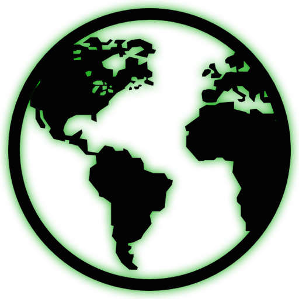
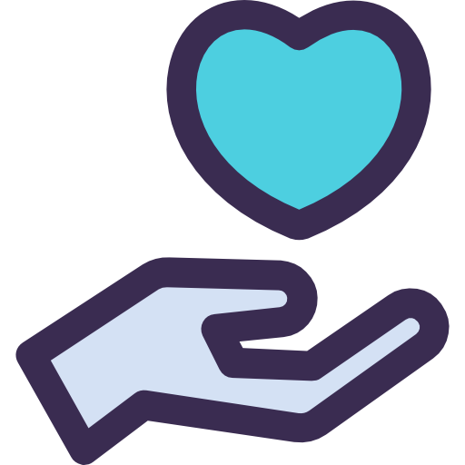
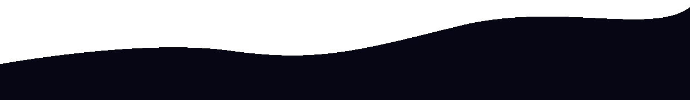

;.
Tranformando o mundo
Ações que mudam o

mundo
Muitas vezes deixamos de fazer pequenas coisas que, se todos fizessem, tornaria o mundo em um lugar melhor para todos...
Vale ressaltar que você é muito importante para que essa mudança seja possível.
Acredite, algumas atitudes são bem simples


